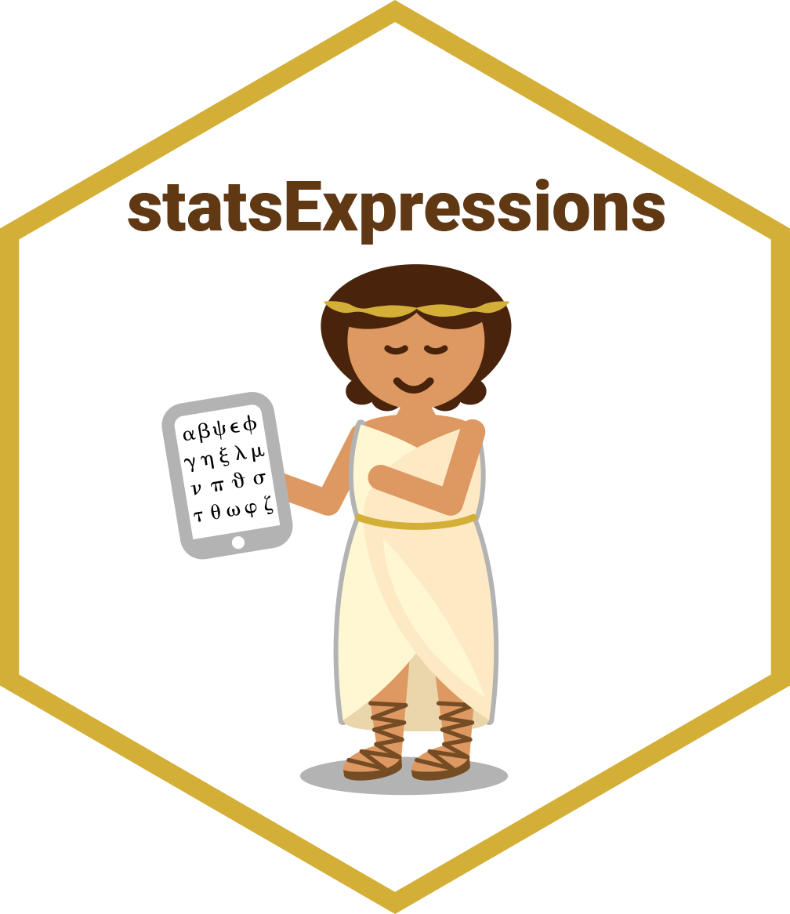

Package index
-
one_sample_test() - One-sample tests
-
two_sample_test() - Two-sample tests
-
oneway_anova() - One-way analysis of variance (ANOVA)
-
corr_test() - Correlation analyses
Contingency table analysis
Dataframes and expressions for contingency table analysis and one-sample goodness of fit proportion test
-
contingency_table() - Contingency table analyses
-
meta_analysis() - Random-effects meta-analysis
-
pairwise_comparisons() - Multiple pairwise comparison for one-way design
-
centrality_description() - Data frame and expression for distribution properties
-
tidy_model_expressions() - Expressions with statistics for tidy regression data frames
-
tidy_model_parameters() - Convert parameters package output to tidyverse conventions
-
extract_stats_type()stats_type_switch() - Switch the type of statistics.
-
long_to_wide_converter() - Convert long/tidy data frame to wide format
-
add_expression_col() - Template for expressions with statistical details
-
p_adjust_text() - p-value adjustment method text
-
movies_long - Movie information and user ratings from IMDB.
-
iris_long - Edgar Anderson's Iris Data in long format.
-
bugs_long - Tidy version of the "Bugs" dataset.